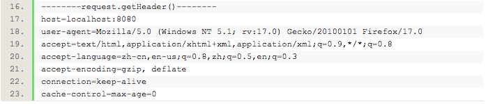

2016/12/25
Author: guoqzuo
javaweb判断是否为移动端访问
一般java后台，会先用servlet获取数据，再跳转到前端页面。在servlet里获取数据时，我们可以根据request.getheader(User-Agent")的内容，判断是否为移动端访问，再转发到相应的页面。可以在保持url不变的情况下，生成两种页面。

测试功能
先创建一个Test的servlet来测试，在doGet函数里面写如下测试代码:
String ua = request.getHeader("User-Agent");
if (this.checkAgentIsMobile(ua))
response.getWriter().print("YES");
else
response.getWriter().print("NO");在该servlet内实现checkAgentIsMobile方法:
/**
* 判断User-Agent 是不是来自于手机
* @param ua
* @return
*/
public boolean checkAgentIsMobile(String ua) {
/* System.out.print(ua); */
boolean flag = false;
if (!ua.contains("Windows NT") || (ua.contains("Windows NT") && ua.contains
("compatible; MSIE 9.0;"))) {
// 排除 苹果桌面系统
if (!ua.contains("Windows NT") && !ua.contains("Macintosh")) {
for (String item : agent) {
if (ua.contains(item)) {
flag = true;
break;
}
}
}
}
return flag;
}
private final static String[] agent = { "Android", "iPhone", "iPod","iPad", "Wi
ndows Phone", "MQQBrowser" };访问该servlet看是YES还是NO，可以用google浏览器根据不同的设备调试。
在本站中的应用
这个原理其实很简单，就是获取ua后抓关键字，有对应的关键字就是移动端。我这个站有3个servlet需要判断，我就封装了一个IsMobileDevice类
public class IsMobileDevice {
public boolean checkAgentIsMobile(String ua) {
boolean flag = false;
if (!ua.contains("Windows NT") || (ua.contains("Windows NT") && ua.cont
ains("compatible; MSIE 9.0;"))) {
// 排除 苹果桌面系统
if (!ua.contains("Windows NT") && !ua.contains("Macintosh")) {
for (String item : agent) {
if (ua.contains(item)) {
flag = true;
break;
}
}
}
}
return flag;
}
private final static String[] agent = { "Android", "iPhone", "iPod","iPad",
"Windows Phone", "MQQBrowser" };
}实际中的应用:
String ua = request.getHeader("User-Agent");
IsMobileDevice isMobile = new IsMobileDevice();
String url = "index.jsp";
if (isMobile.checkAgentIsMobile(ua)) { // 判断是否为移动端
url = "m_index.jsp";
}
request.getRequestDispatcher(url).forward(request, response);